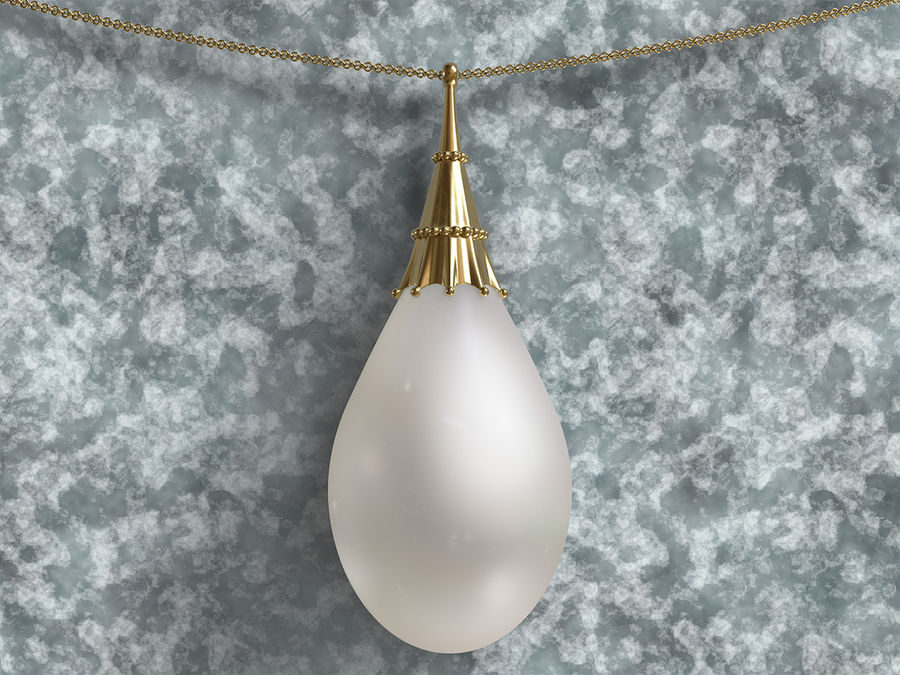

Mox Pearl
Mox Pearl est un artefact qui offre un mana blanc supplémentaire sans aucun coût de mana pour le jouer. Lancé dans la série Alpha en 1993, il est devenu célèbre pour sa capacité à accélérer le jeu en permettant aux joueurs de déployer
Mox Pearl est un artefact qui offre un mana blanc supplémentaire sans aucun coût de mana pour le jouer. Lancé dans la série Alpha en 1993, il est devenu célèbre pour sa capacité à accélérer le jeu en permettant aux joueurs de déployer